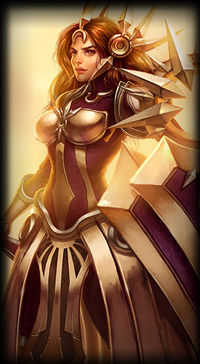

Leona "Der strahlende Sonnenaufgang"
Informationen über Leona
Leona zählt zu den robustesten Champions in League of Legends unteranderem wegen ihrer W-Fähigkeit die ihr Rüstung- und Magieresistenz geben. Mit ihrer passiven makiert sie jeden Gegner der von einer Fähigkeit getroffen wird und wenn ein verbündeter diesen Gegner Schaden zufügt expodiert diese marke und mach magischen Schaden. Mit ihrer ultimativen Fähigkeit kann sie mehrer Gegner in einem kleiner Radius stunnen das ist vorallem im solo-/duo-Que sehr effectiv, weil gegner dort häufig unkoordiniert sind und auf dem Haufen stehen, sodass sie mehrere Gegner treffen kann.
Man sollte versuchen Leonas E-Fähigkeit auszuweichen da diese ihre einziege Fähigkeit ist um an den Gegner ran zu kommen.